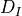
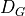
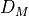
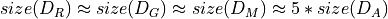
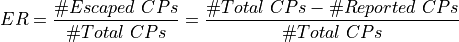

Implementation Details¶
To evaluate Clonescaper, we select unique code snippets from the OJClone datasets. For a given code snippet x, we generate five semantic-preserved variants. We then iteratively pair x, with a variant and feed the code pair to ML-based detectors to see whether they can determine that pair as code clones.
OJ is a C language database collected by Mou et al 1. It consists of 104 folders; each folder contains different implementations of solutions of the same problem
We select around 20% of the code from each OJClone task to form an initial dataset , and apply the four strategies (AM, RM, GA, and MCMC) to to construct new datasets , , , and . The original OJClone dataset has many redundant problem solutions and we only use the distinct solutions after careful inspection.
In the construction of the new dataset, we use the same code to generate the mutated code with different strategies. That is, each strategy takes a code C, and output a new mutated code C’ to form a code clone pair {C, C’}. Considering the random characteristics of RM, GA, and MCMC, we generate five instances of C’ for each C. Therefore, .
AM |
RM |
GA |
MCMC |
|
Clone Pairs |
10300 |
10394*5 |
10075*5 |
10395*5 |
Time(m) |
9.01 |
17.83 |
139.30 |
926.73 |
After obtaining the four new datasets, we feed them to the clone detector under test. We define a metric named Escape Rate (ER) to assess the performance of the ML-based detectors:

Footnotes
- 1
Lili Mou, Ge Li, Lu Zhang, Tao Wang, and Zhi Jin. 2016. Convolutional Neural Networks over Tree Structures for Programming Language Processing. In Proceedings of the Thirtieth AAAI Conference on Artifcial Intelligence, Dale Schuurmans and Michael P. Wellman (Eds.). 1287–1293.